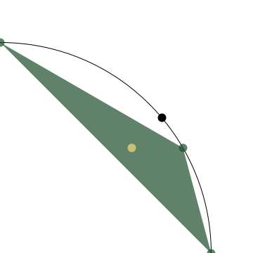

class: center, middle, titlepage count: false # Morse Theory for Wasserstein Spaces and Simplicial Metric Thickenings ## Joshua Mirth ### Preliminary Examination .source[August 1, 2019] --- <!-- # Outline .bigger[ I. What is optical flow? II. The Dataset III. Topological Data Analysis IV. Results ] --> # Motivation Persistent homology studies sequences of spaces `\( X_0 \subseteq X_1 \subseteq X_2 \subseteq \cdots \subseteq X_n \)`. Typically constructed with either _sublevel sets_ or _Vietoris–Rips_ complexes. **Definition:** The Vietoris–Rips simplicial complex on a metric space `\(X\)` at scale parameter `\(r\)` contains a `\(k\)`-simplex `\(\sigma = [x_0 , \ldots , x_k]\)` for every set of `\(k+1\)` points `\(\{ x_0 , \ldots , x_k\}\)` in `\(X\)` with $$ \max_{i,j\in[0,\ldots,k]} d(x_i,x_j) \le r . $$ Any sequence `\(r_0 \lt r_1 \lt \cdots \lt r_n\)` gives a sequence $$ \mathrm{VR}(X;r_0) \subseteq \mathrm{VR}(X;r_1) \subseteq \cdots \subseteq \mathrm{VR}(X;r_n). $$ --- Intuitively, `\(\mathrm{VR}(X;r)\)` thickens the space `\(X\)`: .fiftyfiftyleft[ A set of data `\(X \subset \mathbb{R}^2\)`.] .fiftyfiftyright[<img src="vr_random_circle_data.png" width=90% height=90% /> The Vietoris–Rips complex of `\(X\)`.] -- .left[**Warning:** This is not a rigorous statement!] --- **Definition:** A metric thickening of a space `\((X,d_X)\)` is a metric space `\((Z,d_Z)\)` and a map `\(\iota \colon X \to Z \)` such that `\(\iota\)` is an isometry onto its image. **Problems:** 1. The simplicial complex topology on `\(\mathrm{VR}(X;r)\)` is not always metrizable. -- 2. There is a canonical inclusion `\(\iota \colon X \hookrightarrow \mathrm{VR}(X;r)\)` given by `\(x \mapsto [x]\)`. However, `\(\iota\)` is not even continuous when `\(X\)` is not discrete. (The vertex set of a simplicial complex has the discrete topology!) -- **Example:** If `\(X = \mathbb{S}^1\)`, then `\(\mathrm{VR}(X;0)\)` is an uncountable set of discrete points. .center[<img src="circle_explode.png" width=90% height=90% /> `\(\mathbb{S}^1\)` and `\(\mathrm{VR}(\mathbb{S}^1;0)\)` (With uncountably many points on the right!)] --- # Vietoris–Rips Thickenings Reinterpret simplices as discrete _probability measures_ on `\(X\)`. * In any simplicial complex, a point in a simplex is given by barycentric coordinates: if `\(\sigma = [x_0 , \ldots , x_k]\)`, then any `\(x \in \sigma\)` is given by `$$ x = \sum_{i=0}^{k} \lambda_{i} x_{i}. $$` * Barycentric coordinates can be interpreted as probability measures: `$$ \displaystyle \sum_{i=0}^{k} \lambda_{i} x_{i} \iff \sum_{i=0}^{k} \lambda_{i} \delta[x_{i}] . $$` * The Vietoris–Rips metric thickening, `\(\mathcal{VR}(X;r)\)`, consists of measures corresponding to simplices in `\(\mathrm{VR}(X;r)\)`. --- # The Wasserstein Distance The space of probability measures `\(\mathcal{P}(X)\)` can be metrized with the Wasserstein distance. `$$ \displaystyle W_2(\mu,\nu)^2 = \inf_{\gamma} \int_{X \times X} d(x,y)^2 d\gamma(x,y) $$` where the infimum is taken over all measures `\(\gamma\)` on `\(X \times X\)` whose marginals are `\(\mu\)` and `\(\nu\)`. `\(\mathcal{VR}(X;r)\)` naturally inherits the Wasserstein metric from `\(\mathcal{P}(X)\)`. With this metric, `\(W_2(\delta[x_0],\delta[x_1]) = d(x_0,x_1)\)`, so the inclusion `\(\iota \colon X \to \mathcal{VR}(X;r) \)` is continuous. Thus `\(\mathcal{VR}(X;r)\)` is a metric thickening of `\(X\)`. ??? Draw a picture: optimal transport between a 2-simplex and a 1-simplex. --- # Known Results **Theorem:** [Hausmann] For a Riemannian manifold `\(M\)`, and sufficiently small `\(r \gt 0\)`, there is a homotopy equivalence `\(\mathrm{VR}(M;r) \simeq M\)`. **Theorem:** For a Riemannian manifold `\(M\)` [Adamaszek, Adams, Frick] or a smooth manifold `\(M \subseteq \mathbb{R}^n\)` with the Euclidean distance [Adams, M.] and small `\(r\)` there is a homotopy equivalence `\(\mathcal{VR}(M;r) \simeq M\)`. -- There are many proofs of (some form of) these theorems! * For spheres: [Adamaszek, Adams] [Zaremsky] * For Riemannian manifolds [Hausmann] [Latschev] [Adamaszek, Adams, Frick] * For Euclidean submanifolds [Niyogi, Smale, Weinberger] [Adams, M.] --- _Proof Sketch:_ Let `\(\iota\)` be the canonical inclusion of `\(M\)` into `\(\mathcal{VR}(M;r)\)`. If `\(r\)` is sufficiently small, the Fréchet mean $$ F(\mu) := \mathrm{argmin}_{p \in M} \int_M d^2(x,p) d\mu(x) $$ is well-defined and continuous on `\(M\)`. It can be shown that for every `\(\mu\)` (left), the measure `\(\mu \cup F(\mu)\)` is in `\(\mathcal{VR}(M;r)\)` (center), so the homotopy shown is well-defined (right). .triptychL[] .triptychC[] .triptychR[<img src="oldHomotopy.gif" width=100% height=100% />] --- ## A New Proof _Proof Sketch:_ (For `\(M = \mathbb{S}^1\)`) `\(F \circ \iota = \mathrm{id}\)` and `\(\iota \circ F \simeq \mathrm{id}\)` by the homotopy shown below: .center[ Path between `\(\mu\)` (in gold) and its Fréchet mean (in black).] --- # Corollaries: **Corollary 1:** The `\(k\)`-skeleton of `\(\mathcal{VR}(\mathbb{S}^1;r)\)` is homotopy equivalent to `\(\mathbb{S}^1\)` for sufficiently small `\(r\)`. **Corollary 2:** The set of all probability measures with (possibly infinite) support bounded in diameter by `\(r\)`, `\(\mathcal{VR}^\infty(\mathbb{S}^1;r)\)`, is homotopy equivalent to `\(\mathbb{S}^1\)` for sufficiently small `\(r\)`. **Conjecture:** The generalized Borsuk–Ulam theorem in [Adams, Bush, Frick] is true for sets of `\(2k+1\)` points: for `\(f \colon \mathbb{S}^1 \to \mathbb{R}^{2k+1}\)` there exists a set `\(\{x_0 , \ldots , x_{2k}\}\)` of diameter at most `\(\frac{k}{2k+1}\)` such that `\(\sum_{i} \lambda_i f(x_i) = \sum_i \lambda_i f(-x_i) \)`. (Currently requires `\(2k+2\)`.) (These require the new proof.) --- For larger `\(r\)`, `\(\mathcal{VR}(M;r)\)` is not homotopy equivalent to `\(M\)`. .fiftyfiftyleft[<img src="r_small_enough.png" width=90% height=90% /> `\(\mathcal{VR}(\mathbb{S}^1;r)\)` for `\(r\)` sufficiently small.] .fiftyfiftyright[ `\(\mathcal{VR}(\mathbb{S}^1;r)\)` for `\(r\)` too big.] The critical scale is `\(r = \frac{2\pi}{3}\)`, at which `\(\mathcal{VR}(\mathbb{S}^1;\frac{2\pi}{3}) \simeq \mathbb{S}^3 \)`. For `\(r \ge \frac{2\pi}{3} \)` there are measures which do not have a unique Fréchet mean. --- # Questions: 1. What is the homotopy type of `\(\mathcal{VR}(\mathbb{S}^1;r)\)` when `\(r \gt \frac{2\pi}{3}\)`? 2. More generally, how does the homotopy type of `\(\mathcal{VR}(M;r)\)` evolve as `\(r\)` increases when `\(M\)` is a manifold? -- ### Motivation: .center[<img src="circle_R4_barcodes.png" width=90% height=90% /> Persistence barcodes (computed in Ripser) for data from a circle.] --- class: middle, center, titlepage count: false # Morse Theory and Wasserstein Spaces --- # The Morse Lemmas Let `\(f\)` be a Morse function on a manifold `\(M\)`. **Lemma A:** If `\([a,b]\)` contains no critical values of `\(f\)`, then the sublevel sets `\(f^{-1}(-\infty,a]\)` and `\(f^{-1}(-\infty,b]\)` are homotopy equivalent. _Proof Sketch:_ Flow from `\(f^{-1}(-\infty,b]\)` to `\(f^{-1}(-\infty,a]\)` along the gradient of `\(f\)`. **Lemma B:** If `\([a,b]\)` contains exactly one critical value, `\(c\)`, of `\(f\)`, corresponding to a unique critical point `\(p = f^{-1}(c)\)`, then `\(M^b \simeq M^a \cup D^k\)` where `\(k\)` is the index of `\(p\)`. --- The Fréchet variance of a measure `\(\mu\)` with mean `\(\bar{\mu} \in M\)` is $$ V(\mu) := \int_M d^2(x,\bar{\mu}) d\mu(x) . $$ Intuitively measures the "spread" of the support of the measure. .center[] **Conjecture:** The homotopy in the preceding proof is a flow along `\(-\nabla V\)`. Moreover, Fréchet variance serves as a type of Morse function on `\(\mathcal{VR}(M;r)\)`, and flowing along `\(-\nabla V\)` gives a version of Morse Lemma A. ... Does `\(\mathcal{VR}(M;r)\)` have enough structure for "gradient" and "flow" to be meaningful? --- There is a differentiable structure on `\(\mathcal{P}(M)\)`, the space of probability measures on `\(M\)` with the `\(W_2\)` metric: * The tangent space at a point `\(\mu = \sum_{i} \lambda_i \delta[x_i] \)` is `\(\oplus T_{x_i}M \)`. * The gradient of a function `\(F \colon \mathcal{P}(M) \to \mathbb{R} \)` at `\(\mu\)` is defined by `$$ \lim_{\nu \to \mu} \frac{F(\nu) - F(\mu) - \int_{M \times M} \langle \nabla F , y - x \rangle d\gamma(x,y)}{W_2(\mu,\nu)} = 0. $$` .center[] **Theorem:** [Ambrosio, Gigli, Savaré] Every reasonably smooth curve in `\(\mathcal{P}(M)\)` has an associated velocity vector field. --- ### Outline for Lemma A For `\(F\)` the Fréchet variance or another suitable functional `\(F \colon \mathcal{P}(M) \to \mathbb{R}\)`, * Compute `\(\nabla F\)`. * Identify the gradient flow curves `\(\mu_t\)`. * Show that they glue together to form a homotopy from `\(F^{-1}(-\infty,b]\)` to `\(F^{-1}(-\infty,a]\)` when `\(b \gt a\)` and no critical values are in between. -- Future work: * Understand how this behaves when restricted to `\(F^{-1}(-\infty,b] \cap \mathcal{VR}(M;r)\)`. * Determine how general `\(M\)` can be (`\(M = \mathbb{R}^n\)` or `\(\mathbb{S}^1\)` seem to work well). * Morse Lemma B? ??? * The continuity equation from PDEs $$ \frac{\partial \mu}{\partial t} + \mathrm{div}_\mu(v_t) $$ defines the flow of a vector field `\(v_t\)`. * Differential forms and De Rahm cohomology are defined [Gangbo, Kim, Pacini]. --- class: middle, center, titlepage count: false # Simplicial Metric Thickenings --- # Definitions A _simplicial metric thickening_ is a metric space, `\(X\)`, and a subspace, `\(\mathcal{K} \subseteq \mathcal{P}(X)\)` which satisfies: * The image of the canonical inclusion `\(\iota \colon X \to \mathcal{P}(X)\)` is in `\(\mathcal{K}\)`, and * if `\(\mu \in \mathcal{K}\)` and `\(\nu\)` is absolutely continuous with respect to `\(\mu\)`, then `\(\nu \in \mathcal{K}\)`. Examples: * `\(\mathcal{P}(X)\)` itself, and `\(\mathcal{F}(X)\)`, the subspace of finitely-supported measures. * The Vietoris–Rips thickening. * The Čech complex with the Wasserstein metric. * The set of all probability measures on `\(X\)` with variance at most `\(v\)`. * Any simplicial complex with the discrete metric on its vertex set and the Wasserstein metric on simplices. --- # Results All of the examples on the preceding slide are functors into a suitably-defined category of simplicial metric thickenings. *Theorem:* The Vietoris–Rips and Čech metric thickenings factor over products up to homotopy: `$$ \mathcal{VR}(X;r) \times \mathcal{VR}(Y;r) \simeq \mathcal{VR}(X \times Y;r) $$` *Theorem:* The Vietoris–Rips and Čech metric thickenings factor over pointed coproducts up to homotopy: `$$ \mathcal{VR}(X;r) \vee \mathcal{VR}(Y;r) \simeq \mathcal{VR}(X \vee Y;r) $$` **Conjecture:** A version of Dowker's theorem holds for simplicial metric thickenings. --- class: middle, center, titlepage count: false # Thank you! ### Questions? --- # References: .source[ * Michal Adamaszek and Henry Adams. The Vietoris–Rips complexes of a circle. _Pacific Journal of Mathematics_, 290(1):1-40, 2018. * Michal Adamaszek, Henry Adams, Florian and Frick. Metric reconstruction via optimal transport. _SIAM Journal on Applied Algebra and Geometry_, 2(4):597-619, 2018. * Henry Adams and Johnathan Bush. Metric thickenings, Borsuk-Ulam theorems, and orbitopes. _arXiv preprint arXiv:190706276_, 2019. * Henry Adams and Joshua Mirth. Metric thickenings of Euclidean submanifolds. _Topology and its Applications_, 254:69-84, 2019. * Luigi Ambrosio, Nicola Gigli, and Giuseppe Savaré. _Gradient flows: in metric spaces and in the space of probability measures_. Springer Science and Business Media, 2008. * Wilfrid Gangbo, Hwa Kil Kim, and Tommaso Pacini. _Differential forms on wasserstein space and infinite-dimensional Hamiltonian systems_. American Mathematical Society, 2010. * Jean-Claude Hausmann. On the Vietoris–Rips complexes and a cohomology theory for metric spaces. _Annals of Mathematics Studies_, 138:175-188, 1995. * Janko Latschev. Vietoris-Rips complexes of metric spaces near a closed Riemannian manifold. _Archiv der Mathematik_, 77(6):522-528, 2001. * John Milnor. _Morse Theory_. Annals of Mathematics Studies. Princeton University Press, 1969. * Partha Niyogi, Stephen Smale, and Shmuel Weinberger. Finding the homology of submanifolds with high confidence from random samples. _Discrete and Computational Geometry_, 39(1-3):419-441, 2008. * Céderic Villani. _Optimal transport: old and new_, volume 338, Springer Science and Business Media, 2008. * Matthew Zaremsky. Bestvina-Brady discrete Morse theory and Vietoris–Rips complexes. _arXiv preprint arXiv:1812.10976_, 2018. ]